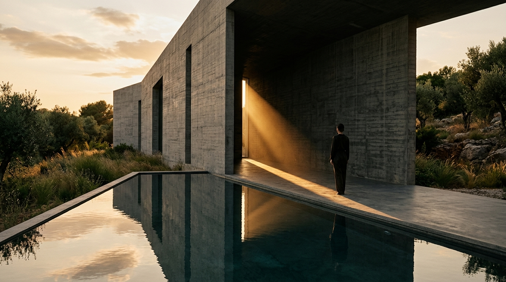
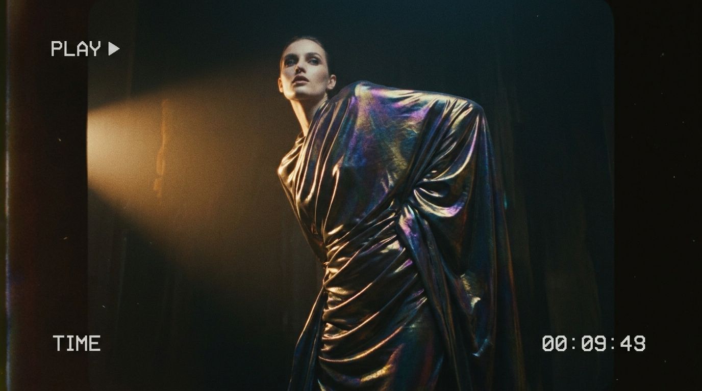
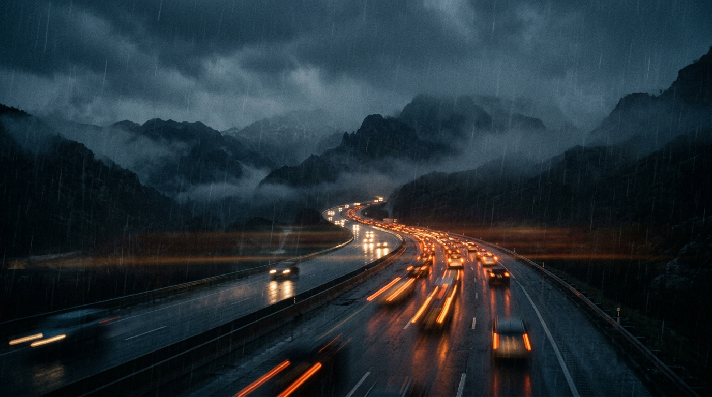
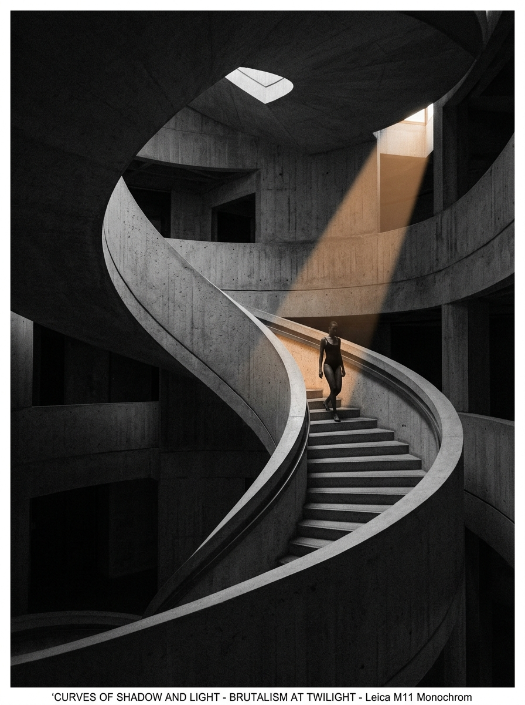
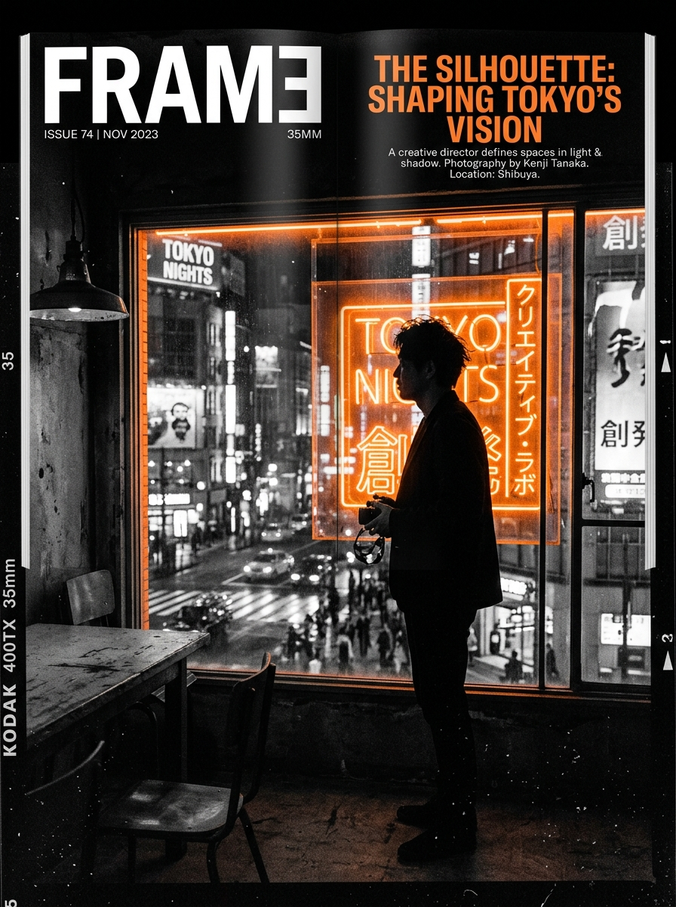

[PROJECT 01 / CREATOR REEL]


RHYTHM • PACING • SELECTS • TENSION
DIRECTION • ATMOSPHERE • SOUNDSCAPES
35MM GRAIN • KODAK LOOKS • COMPOSITION
CRAFTING RETENTION THAT RESONATES
An anamorphic cinematic narrative exploration of rhythm, desert atmospheres, and nuanced color science.






I'm Harinder, a video editor and colorist focused on narrative tension, sonic weight, and filmic color science. From fast-paced commercial spots to cinematic creator reels, I treat every millisecond as an opportunity to grip the viewer.